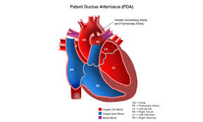
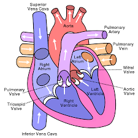
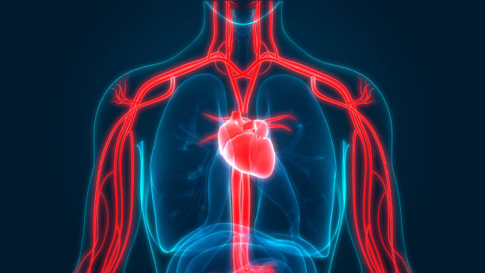
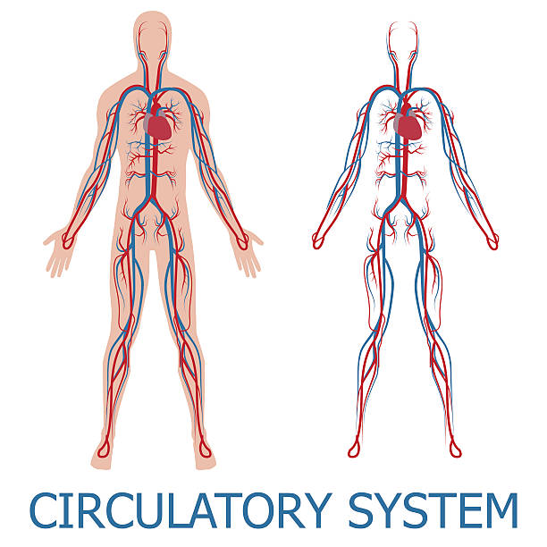
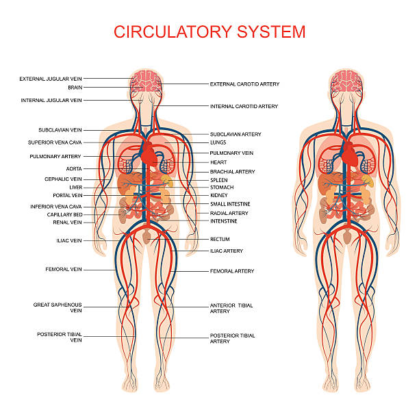

Cardiovascular System
The cardiovascular system is sometimes called the blood-vascular, or simply the circulatory, system. It consists of the heart, which is a muscular pumping device, and a closed system of vessels called arteries, veins, and capillaries. As the name implies, blood contained in the circulatory system is pumped by the heart around a closed circle or circuit of vessels as it passes again and again through the various "circulations" of the body





